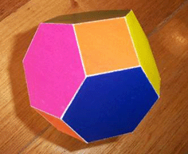
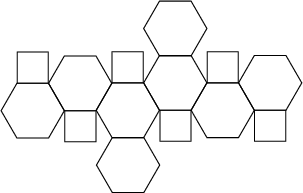

System Preparation¶
Obtaining the Starting Structure¶
Obtain DNA structure from the Protein Data Bank (PDB). We will be using the structure 1bna.
Preparing the Starting Systems¶
For our simulations, we will be using implicit solvent models, or an explicit solvent model with ions.
Our starting structure will be a DNA structure from the Protein Databank.
We will strip water and ion molecules from this structure, then use tleap
to load forcefields and create Amber topology and coordinate files.
Isolating DNA using cpptraj¶
Start cpptraj by executing the command cpptraj in your terminal:
The DNA structure we’ve obtained from the Protein Data Bank contains some water molecules.
We will use cpptraj to strip out the water molecules.
Start cpptraj by typing its name into your terminal.
cpptraj
The following set of commands can be typed into cpptraj to strip the solvent from the PDB file.
The parm 1bna.pdb reads the PDB as an Amber topology file.
The line trajin 1bna.pdb reads in the coordinates of the PDB file.
The line strip !:1-24 strips everything but residues
1-24, and trajout dna_only.pdb
parm 1bna.pdb
trajin 1bna.pdb
strip !:1-24
trajout dna_only.pdb
Creating prmtop and inpcrd Files for Vacuum System¶
Now that we have a PDB file that only has the DNA,
we can use tleap to create amber prmtop and inpcrd files.
These prmtop file contains forcefield parameters and atom connectivity (or topology) - prmtop stands for “parameter/topology”.
You will use the prmtop file for every simulation of the DNA vacuum system you perform.
The inpcrd file will contain the initial coordinates for your simulation system.
Type tleap into your terminal to open tleap.
tleap
The following commands load the appropriate forcefields.
As of the writing of this tutorial (Sept 2023),
OL21 was the recommended DNA forcefield.
It is loaded into tleap using source leaprc.DNA.OL21.
The loadpdb command followed by our PDB name loads in the DNA structure we created with leap in the previous step, saved in a variable called dna.
In the last step, the prmtop and the inpcrd files for our system are saved.
source leaprc.DNA.OL21
dna = loadpdb dna_only.pdb
saveamberparm dna dodecamer_vac.prmtop dodecamer_vac.inpcrd
quit
You can type this all into tleap, or you can create a leap.in file that contains the text in the block above.
If you create a leap.in, you run tleap with the input file using
tleap -f leap.in
After running the commands above, you will see an output similar to the following:
-I: Adding AMBERHOME/dat/leap/prep to search path.
-I: Adding AMBERHOME/dat/leap/lib to search path.
-I: Adding AMBERHOME/dat/leap/parm to search path.
-I: Adding AMBERHOME/dat/leap/cmd to search path.
-f: Source leap_vac.in.
Welcome to LEaP!
(no leaprc in search path)
Sourcing: ./leap_vac.in
----- Source: AMBERHOME/dat/leap/cmd/leaprc.DNA.OL21
----- Source of AMBERHOME/dat/leap/cmd/leaprc.DNA.OL21 done
Log file: ./leap.log
Loading library: AMBERHOME/dat/leap/lib/ff-nucleic-OL21.lib
Loading parameters: AMBERHOME/dat/leap/parm/parm10.dat
Reading title:
PARM99 + frcmod.ff99SB + frcmod.parmbsc0 + OL3 for RNA
Loading parameters: AMBERHOME/dat/leap/parm/ff-nucleic-OL21.frcmod
Reading force field modification type file (frcmod)
Reading title:
OL21 force field for DNA (OL15 + alpha/gamma OL21), see http://ffol.upol.cz
Loading PDB file: ./dna_only.pdb
total atoms in file: 486
Leap added 272 missing atoms according to residue templates:
272 H / lone pairs
Checking Unit.
Warning: The unperturbed charge of the unit (-22.000000) is not zero.
Note: Ignoring the warning from Unit Checking.
Building topology.
Building atom parameters.
Building bond parameters.
Building angle parameters.
Building proper torsion parameters.
Building improper torsion parameters.
total 260 improper torsions applied
Building H-Bond parameters.
Incorporating Non-Bonded adjustments.
Not Marking per-residue atom chain types.
Marking per-residue atom chain types.
(no restraints)
The output tells us what forcefields we have loaded and the name of our PDB file. The output gives us some information about what happened when the file was loaded:
Loading PDB file: ./dna_only.pdb
total atoms in file: 486
Leap added 272 missing atoms according to residue templates:
272 H / lone pairs
Checking Unit.
When we load a structure into tleap, one of the first thing the program does is attempt to match our existing molecules or residues to those existing in the Amber forcefields that have been loaded.
Our simulation system for this tutorial uses all standard residues - each nucleic acid base is present and has parameters in Amber’s forcefield files.
We can see that when our PDB file was loaded that tleap added some missing hydrogens.
LEaP is able to do this because for each residue in the PDB file, it searches the for residues defined by our loaded forcefields that match the residue name.
If a match is found, then the contents of the residue are copied into the UNIT created for the PDB structure.
If no PDB `TER’ card separates the current residue from the previous one, a bond is created between the connect1 ATOM of the previous residue and the connect0 atom of the new one.
As atoms are read from the ATOM records in the PDB, their coordinates are written into the correspondingly named ATOMs within the residue being built.
If the entire residue is read and it is found that ATOM coordinates are missing, then external coordinates are built from the internal coordinates that were defined in the matching UNIT (residue) variable.
This allows LEaP to build coordinates for hydrogens and lone pairs which are not specified in PDB files.
A visualization of our generated structure is shown below. Note that you will see the top of the DNA helix (looking down the z-axis). Click and rotate to view.
Creating prmtop and inpcrd files for solvated system¶
After building the vacuum system, we will make a second system that is solvated with water and ions.
For our solvated system, we will load an additional frcmod file containing parameters for OPC water and associated ions.
The OPC water file loads Li and Merz 12-6 ions.
For demonstration purposes, we will create a prmotop and inpcrd with only ions (no water) first.
source leaprc.DNA.OL21
source leaprc.water.opc
dna = loadpdb dna_only.pdb
addions dna Na+ 0
saveamberparm dna dodecamer_ions.prmtop dodecamer_ions.inpcrd
quit
You can run tleap using this input file in your terminal
tleap -f leap_ions.in
From this output, you will see that tleap has added 22 ions to our system.
The command addions Na+ 0 adds enough ions to neutralize the system.
The sodium ions are placed around the negatively charged DNA backbone.
We will now add solvent to our system.
Because we are simulating DNA, it will be necessary to use something besides a cubic box.
Often, when solvating with tleap, we will use the SOLVATEBOX command.
This command results in a rectangular box for DNA.
Though this tutorial doesn’t require making a cubic box, consider the illustration of the solvated DNA system below.
The box built by `tleap`` is not cubic since DNA is a cylindrical molecule (it is rectangular). An issue here is that the long axis of DNA could rotate (via self diffusion) such that the long axis was along the short box dimension which will, since this box will be infinitely repeated in space by the periodic boundary method, bring the ends of the DNA near their periodic images. One way to get around this would be to make the box cubic by specifying a list of numbers to the solvateBox command to force this to be cubic. However, this will add significantly more water to the calculation and slow it down tremendously. Alternatively we can use a different shape box of water. While a rectangular box is the obvious choice for tessellating in 3 dimensional space it is not the only shape that can be replicated in 3 dimensions. A more efficient shape to use, in terms of reducing the problem of solute rotation, and the one we will be using for this tutorial, is a truncated octahedron:
 A truncated octahedron is a space-filling shape which is “more spherical” than a cube, thus wasting less computation on solvent molecules distant from the solute.
To add a truncated octahedral box of water around our DNA we use the solvateoct command.
Our leap input would look like the following:
source leaprc.DNA.OL21
source leaprc.water.opc
dna = loadpdb dna_only.pdb
addions dna Na+ 0
solvateoct dna OPCBOX 8.0
saveamberparm dna dodecamer_solv.prmtop dodecamer_solv.inpcrd
quit
Now we have input files for our DNA in an octahedral solvent box. You can see a visualization of this system below.
We now have files needed for our simulation. You can download each of these final files below: